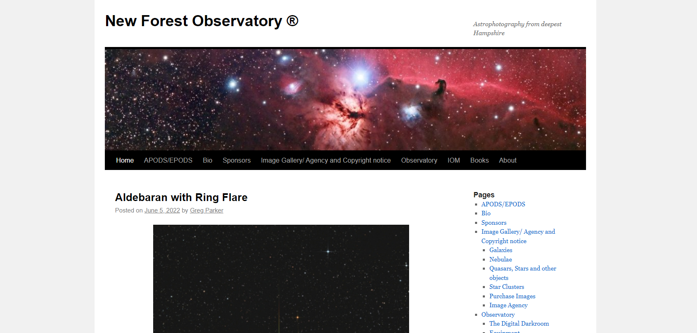

História sobre sky news

Sky news Canal de noticias britânico, o propósito do site sempre foi passar noticias tanto nacionais e internacional e por conta de ser um canal de noticias renomado, o nascimento do seu web site foi bem recebido. Logo abaixo uma foto da versão mais antiga do site que pode ser visualizado em archive.org
Não a proposta do web site ate os dias atuais é de passar noticias.
O site nas suas primeira versões naõ eram muito chamativos, tanto as cores, e as imagens escolhidas não causava impacto ou interesse pelo usuario e sem interação com o usuario. Atualemnte com o avanço do mundo, o site fico mordenizado, porém não tem interação com usuario conservando esse mal desde da suas primeiras verões.
Primeiramente mudaria a cor para um roxo degrade com um tom mais escuro, para dar um ar enovador e mostrar com a empresa estaria disposta a mudar,e segundo fária uma interface um pouco mais intuitiva para melhorar a experiência de quem não tem o costume de acessar web sites, sistemas de interação com usuario para se sentir incluido, e daria foco para noticias mais interessante para jovens, como tecnologia jogos, cultura.